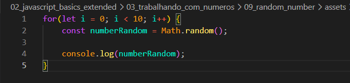
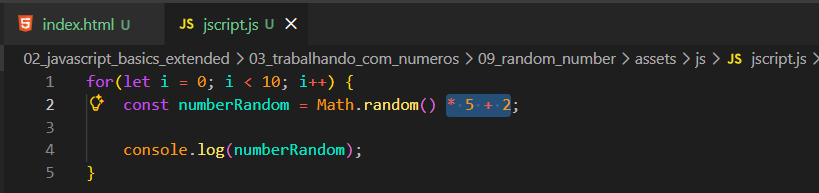
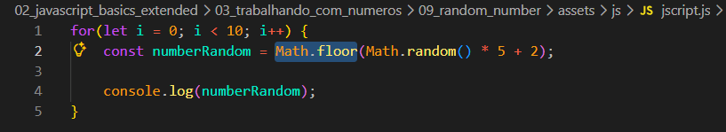

Generate a random number
Intro
Aqui vamos aprender a gerar números aleatórios no JavaScript.
Aqui vamos aprender a gerar números aleatórios no JavaScript.
Para isso, usamos um laço de repetição (for), que serve para repetir uma ação várias vezes.
Nesse exemplo, o for vai repetir 10 vezes, executando o código a cada repetição.
Dentro do laço, utilizamos a função Math.random(), que gera um número aleatório entre 0 e 1.
Esse valor é armazenado na variável numberRandom e depois exibido usando console.log().

Resumo: o for repete 10 vezes e, em cada repetição, o Math.random() gera um número aleatório.
Obs: se recarregarmos a pagina esses valores alteram.
Se quisermos valores aleatorios que nao fiquem apenas como 0 e 1, podemos conseguir fazendo isso da seguinte forma:

Para podermos obter valores inteiros podemos utilizar a funcao Math.floar(). Ira ficar da seguinte forma:
